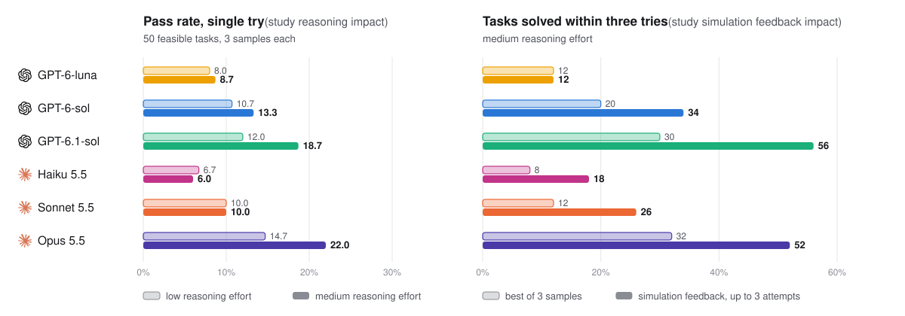
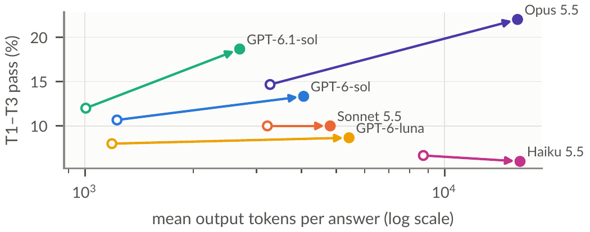
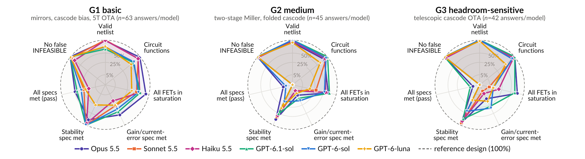

Analog circuit design still relies heavily on expert knowledge, and porting proven designs to new process nodes is a recurring bottleneck. As a lower supply reduces available voltage headroom, a working topology may require redesign or fail to meet specifications. While large language models (LLMs) have begun to generate and optimize analog circuits, existing benchmarks focus on one process node and assume feasible specifications.
To bridge this gap, we introduce AnalogPortBench, a benchmark of 54 tasks for porting ten circuits, from current mirrors to telescopic amplifiers, from a 0.18 µm process to the open-source SKY130 PDK. Tasks range from a direct port through a reduced supply and harder specifications to infeasible ones, and every feasible task has a reference design verified at five process corners. Evaluating six frontier LLMs at two reasoning levels, with and without simulation feedback, we find that models port simple circuits but rarely re-design headroom-sensitive amplifiers, seldom recognize infeasible specifications, and gain more from simulation feedback than from more samples or reasoning.
Ten circuits are ported in up to four tiers that add one difficulty at a time, so a failure can be traced to its cause. The circuits form three grades: G1 basic (current mirrors, cascode bias, 5T OTA), G2 medium (two-stage Miller and folded-cascode OTAs) and G3 headroom-sensitive (telescopic cascode OTAs).
| Tier | VDD, specification | Correct answer | Tasks |
|---|---|---|---|
| T1 | 1.8 V, from simulated source | Porting meets all specification | 10 |
| T2 | 1.2 V, voltage limits ×1.2/1.8 | Porting meets all specification | 12 |
| T3 | 1.2 V, harder (reference exists) | Porting meets all specification | 28 |
| T4 | 1.2 V, beyond a physical bound | INFEASIBLE + best effort | 4 |
Task tiers, all target SKY130 1.8 V low-threshold-voltage (LVT) devices, 54 tasks in total.

Left: share of answers that meet every specification on the 50 feasible tasks, with one try, at low and medium reasoning effort. Right: share of the 50 feasible tasks solved within three tries at medium effort, by the best of 3 samples or with simulation feedback.
| T1 | T2 | T3 | T4 / INFEASIBLE | Solved in 3 tries | ||||||||||
|---|---|---|---|---|---|---|---|---|---|---|---|---|---|---|
| Model | Reasoning effort |
G1 (5) | G2 (3) | G3 (2) | G1 (5) | G2 (3) | G3 (4) | G1 (11) | G2 (9) | G3 (8) | Flagged (4 tasks) ↑ | False alarms ↓ | Resampling | Simulation feedback |
| Naive port | – | 20% | 0 | 0 | 20% | 0 | 0 | 0 | 0 | 0 | – | – | – | – |
| OpenAI | ||||||||||||||
| GPT-6-luna | low | 40% | 0 | 0 | 40% | 0 | 0 | 0 | 0 | 0 | 6/12 | 30/150 | – | – |
| medium | 40% | 0 | 0 | 47% | 0 | 0 | 0 | 0 | 0 | 2/12 | 1/150 | 12% | 12% | |
| GPT-6-sol | low | 53% | 11% | 0 | 47% | 0 | 0 | 0 | 0 | 0 | 6/12 | 1/150 | – | – |
| medium | 73% | 11% | 0 | 53% | 0 | 0 | 0 | 0 | 0 | 6/12 | 0/150 | 20% | 34% | |
| GPT-6.1-sol | low | 67% | 11% | 0 | 33% | 0 | 0 | 6% | 0 | 0 | 1/12 | 0/150 | – | – |
| medium | 73% | 0 | 17% | 53% | 0 | 8% | 21% | 0 | 0 | 2/12 | 0/150 | 30% | 56% | |
| Anthropic | ||||||||||||||
| Haiku 5.5 | low | 40% | 0 | 0 | 27% | 0 | 0 | 0 | 0 | 0 | 9/12 | 20/150 | – | – |
| medium | 27% | 0 | 0 | 33% | 0 | 0 | 0 | 0 | 0 | 9/12 | 20/150 | 8% | 18% | |
| Sonnet 5.5 | low | 60% | 0 | 0 | 40% | 0 | 0 | 0 | 0 | 0 | 6/12 | 3/150 | – | – |
| medium | 60% | 0 | 0 | 40% | 0 | 0 | 0 | 0 | 0 | 5/12 | 4/150 | 12% | 26% | |
| Opus 5.5 | low | 87% | 0 | 0 | 60% | 0 | 0 | 0 | 0 | 0 | 11/12 | 2/150 | – | – |
| medium | 93% | 22% | 0 | 73% | 0 | 8% | 15% | 0 | 0 | 10/12 | 0/150 | 32% | 52% | |
| Reference | – | 100% | 100% | 100% | 100% | 100% | 100% | 100% | 100% | 100% | – | – | – | – |
Zero-shot pass rate per tier and grade. Three samples per task, with task counts in parentheses. INFEASIBLE: answers declared infeasible for T4 tasks (correct, the higher the better) and feasible tasks (false alarms, the lower the better). Solved in 3 tries: rates of feasible tasks solved at medium effort by resampling (best of 3) or simulation feedback (up to 3 attempts). Best and second-best values in each column are highlighted.
Partly, mainly for simple circuits. A naive port that only swaps device names passes 2 of the 54 tasks, and every LLM beats it. The best model, Opus 5.5, passes 93% of T1 answers on G1 circuits, but does not exceed 22% on G2 or G3, even at the original supply.
Lowering the supply from 1.8 V (T1) to 1.2 V (T2) cuts the pass rate of the two strongest models from 53% to 33% for Opus 5.5 and from 40% to 25% for GPT-6.1-sol, and the harder T3 tasks are rarely met. On the telescopic cascode OTA at 1.2 V, Sonnet 5.5 re-sized the stack and reached about 0.23 V of swing with three transistors in triode, while Opus 5.5 noted that the stack cannot reach the limit with all transistors in saturation, replaced it with a two-stage Miller OTA, and met every limit. A correct port here requires a topology change in addition to re-sizing.
Opus 5.5 flags 10–11 of the 12 infeasible specifications with almost no false alarms. Haiku 5.5 and GPT-6-luna at low effort flag often but also raise false alarms on feasible tasks. More reasoning effort does not improve infeasibility detection, and GPT-6.1-sol, the strongest GPT model, ports well but rarely flags an infeasible specification, often returning designs that silently miss an unreachable limit.
More reasoning helps only the strongest models while increasing token cost; the others gain little or nothing despite using up to 4.6× more tokens. Simulation feedback helps all models: for the two strongest, three feedback attempts solve over half of the feasible tasks, against about a third for the best of three samples, and raise solved T3 tasks from 2 to 13 (GPT-6.1-sol) and from 2 to 12 (Opus 5.5).

Pooled T1–T3 pass rate versus mean output tokens per answer, from low (open marker) to medium (filled) reasoning effort.
The radar charts plot the design-flow steps clockwise. On G1 circuits, the shapes narrow at saturation and current error. On G2 circuits, the shapes stay wide except on gain, met by at most 16% of answers against up to 73% for stability, suggesting a gain–stability trade-off. On G3 circuits, the saturation axis separates the models, and even designs with all transistors in saturation lose gain.

Capability per circuit grade (zero-shot, medium effort, T1–T3); each axis is scored independently on a square-root radial scale.
@misc{rajabi2026analogportbench,
title = {AnalogPortBench: Benchmarking {LLMs} on Analog Circuit Porting},
author = {Rajabi, Saeid and Moussa, Aly and Saxena, Vishal and Yang, Chengmo and Patnaik, Satwik},
year = {2026},
eprint = {2610.33088},
archivePrefix = {arXiv},
primaryClass = {cs.AR},
url = {https://arxiv.org/abs/2610.33088}
}